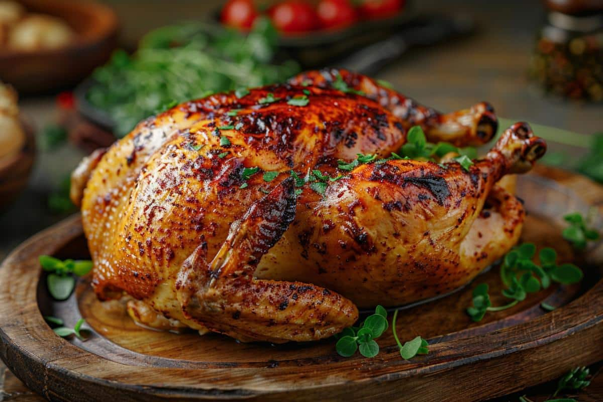
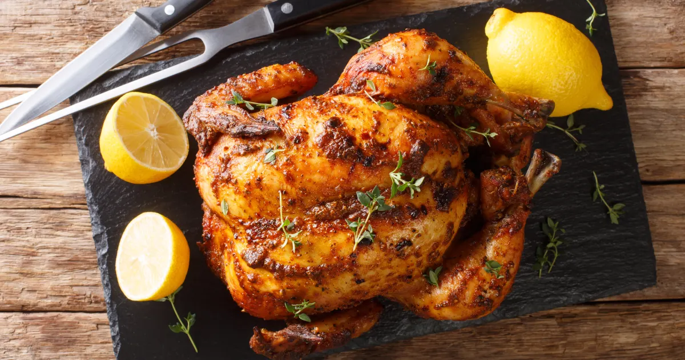

Rotisserie Chicken


Description of the dish:
A rotisserie chicken is a whole chicken that has been seasoned and cooked on a rotating spit, usually over an open flame or in an oven.
Ingredients:
- 1 whole chicken (1.5 to 2kg).
- 2 tablespoons olive oil.
- 2 teaspoons salt.
- 1 teaspoon black pepper
- 1 teaspoon garlic powder
- 1 teaspoon onion powder
- 1 teaspoon paprika
- 1 teaspoon dried thyme (or your choice of herbs)
- 1 lemon, halved
- Fresh Herbs (like rosemary or thyme) for stuffing (optional)
Preparation:
- Preheat the Oven: Preheat your oven to 375°F (190°C).
- Prepare the Chicken: Season the chicken inside and out with salt, pepper, garlic powder, onion powder, paprika, and dried thyme.
- Stuff the Chicken: Squeeze the juice of one lemon half inside the cavity, and then place the used lemon halves and any fresh herbs inside the chicken for added flavor.
- Roast the Chicken: Roast in the preheated oven for about 1.5 to 2 hours, or until the internal temperature reaches 165°F (74°C) in the thickest part of the thigh.
- Rest the Chicken: Rest for about 10-15 minutes before carving. This allows the juices to redistribute.
Serve !